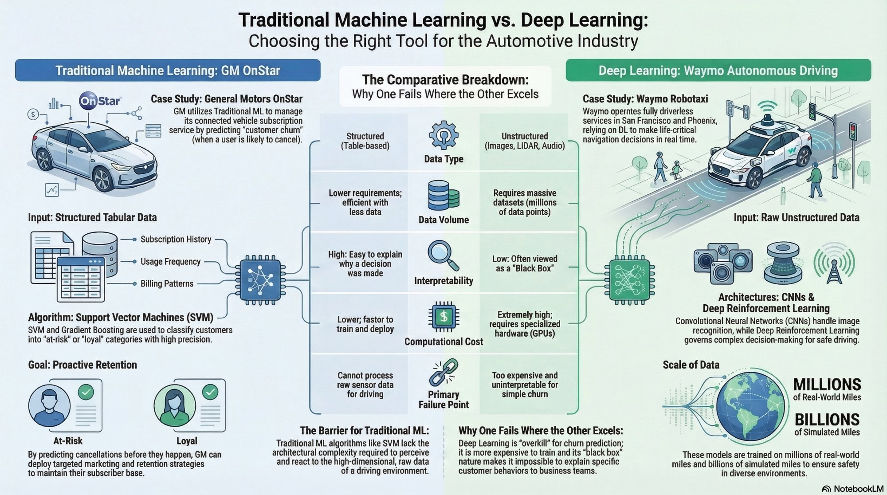

Introduction
Machine learning and deep learning are often discussed as if one naturally supersedes the other. In practice, they solve fundamentally different classes of problems. The distinction becomes clearer when examined through real-world use cases rather than abstract model definitions.
This project uses the automotive industry as a comparative lens. GM OnStar churn prediction illustrates how traditional machine learning excels with structured business data, while Waymo autonomous driving demonstrates why deep learning becomes necessary when the system must interpret raw, high-dimensional sensor input in real time.
Why One Works Where the Other Does Not
GM OnStar Churn Prediction
- Uses structured customer data such as contract terms, billing patterns, feature usage, and service history.
- Works well when domain experts can identify meaningful features ahead of time.
- Provides explainable outputs that business teams can act on with confidence.
- Requires moderate data volume and lower computational cost.
Waymo Autonomous Driving
- Processes raw and unstructured input from cameras, LiDAR, and radar.
- Learns useful features automatically from high-dimensional sensor streams.
- Supports perception-heavy tasks where manual feature engineering is not realistic.
- Requires very large training data volume, high compute, and advanced infrastructure.
Strategic Distinction
Traditional machine learning is strongest when the problem is structured and explainability matters. Deep learning is strongest when the environment is perceptual, complex, and too information-rich for manually engineered features.
Why Traditional ML Fits GM OnStar
Business Problem
GM’s OnStar subscription business depends on retaining connected-service users over time. Churn prediction allows the company to identify high-risk subscribers early and intervene before cancellation, supporting recurring revenue and customer retention strategy.
Why the Method Fits
The available inputs are structured and tabular: service usage, billing history, contract details, support interactions, and vehicle attributes. These are precisely the conditions where traditional machine learning methods such as SVM and gradient boosting are effective.
Interpretability Advantage
Business stakeholders need more than a prediction. They need a reason they can act on. Traditional ML provides a degree of transparency that supports targeted retention actions such as outreach, incentives, or service reminders.
Why Deep Learning Is Not the Better Choice
Deep learning adds complexity, infrastructure cost, and reduced explainability without delivering proportional benefit for a structured churn prediction use case. In this context, the added sophistication does not improve decision quality enough to justify the trade-off.
Why Deep Learning Fits Waymo
Autonomous Driving Context
Waymo operates in environments where the system must continuously interpret roads, pedestrians, vehicles, traffic signals, and obstacles from live sensor streams. The challenge is not simply predictive — it is perceptual, dynamic, and safety-critical.
Why the Method Fits
Deep learning can extract patterns directly from raw visual and spatial input, making it suitable for scene understanding, object detection, and real-time decision support. CNNs and reinforcement learning approaches align naturally with this type of problem.
Scale and Learning Capacity
Autonomous driving systems improve through exposure to large volumes of real and simulated driving data. This scale is essential because edge cases, environmental variability, and rare events must all be represented if the system is to perform safely without human intervention.
Why Traditional ML Breaks Down
Traditional ML depends heavily on manually engineered features. In raw sensor environments, that approach becomes impractical because too much information must be abstracted before learning even begins, leading to loss of richness and weaker real-world performance.
What This Comparison Reveals About AI Design
Interpretability vs Capability
- Traditional ML tends to be more transparent and easier to explain.
- Deep learning often delivers higher capability in unstructured domains but with reduced interpretability.
Feature Engineering vs Representation Learning
- Traditional ML requires humans to identify relevant features in advance.
- Deep learning shifts that burden into the model itself by learning representations automatically.
Infrastructure Cost vs Problem Fit
- Deep learning needs larger data volume, stronger compute, and more complex training pipelines.
- Those costs are justified only when the problem actually requires that level of modeling power.
Operational Stakes
- Churn prediction influences business strategy.
- Autonomous driving influences physical safety. That difference changes how model choices must be evaluated and governed.
Architect Perspective
The choice between traditional machine learning and deep learning is not a matter of capability alone. It is a matter of alignment with data structure, interpretability requirements, infrastructure constraints, and operational risk.
Comparative Infographic
This visual artifact summarizes the full comparison through an automotive lens, showing how different model classes become appropriate under different technical and business conditions.

Why This Matters
This project shows that AI model selection should not be driven by trend, complexity, or hype. It should be driven by the nature of the problem, the form of the data, the business need for explanation, and the infrastructure required to support the solution responsibly.
Portfolio Value
This artifact demonstrates the ability to compare methodologies critically, connect technical model choices to industry use cases, and reason about AI architecture through the lens of practical problem fit. That is exactly the mindset required for real-world solution design.